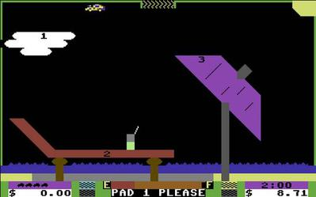
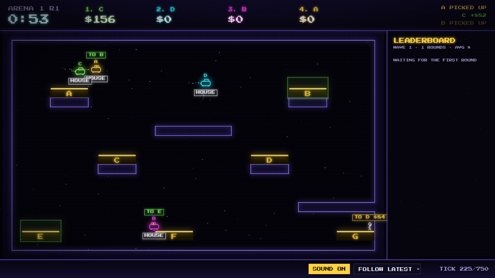

Your agent writes the bot. You steer the agent.
AI Builders workshop

Space Taxi, Commodore 64, 1984 · John Kutcher, Muse Software

Tonight: same idea, flown by bots. Up to 4 taxis per arena, 75-second rounds.
| tick | 100 ms, 750 per round |
| cell | 32 units, integers only |
| gravity | vy += 2 every tick |
| main engine | ay=-1: vy -= 4 |
| side jets | ax=±1: vx ± 2 |
| max speed | 24 units / tick |
| soft landing | vy ≤ 8, |vx| ≤ 3 |
| crash | wall or hard landing: -$25, 30 ticks out |
| fare | $50 + $2 per cell |
| passenger | gone after 300 ticks |
| taxis | ghosts, never collide |
Everything else: http://HOST:8000/brief
ws://HOST:8000/bot, one JSON object per WebSocket frame.
hello → welcome → queued →round_start → (tick ⇄ move) × 750 → round_end
Answer each tick within 75 ms, or your taxi coasts.
The map can change between waves: read it from every round_start.
// server → bot
{"type": "tick", "tick": 42,
"taxis": [{"id": "anna",
"fx": 144, "fy": 211,
"vx": 0, "vy": 6,
"state": "flying", ...}],
"passengers": [...],
"events": [{"type": "crash",
"taxi": "bob", "cause": "wall"}]}
// bot → server
{"type": "move", "tick": 42,
"ax": 0, "ay": -1}# bot.py: no network code
def welcome(info): ... # once
def start(info): ... # each round: map
def move(state): # each tick
return {"ax": 0, "ay": -1}# start from a house bot
uv run spacetaxi new-bot bot.py
# test offline: 100 rounds
uv run spacetaxi run \
--bots ./bot.py,pilot --rounds 100 --json
# fly in the arena
uv run spacetaxi connect --bot bot.py \
--name YOU --server ws://HOST:8000/botuv run uses the project's own .venv (Python and packages), no activate.
/card: the URLs and the first prompt/mission: your next milestone, next to your agent